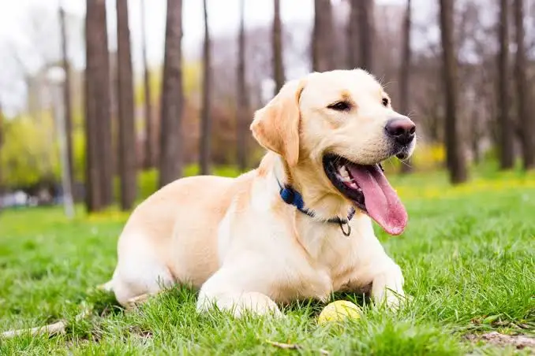
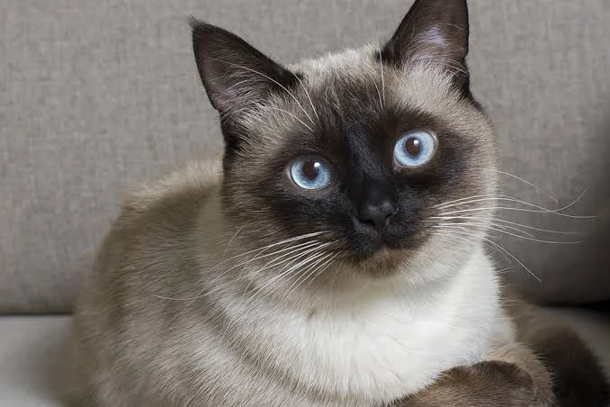
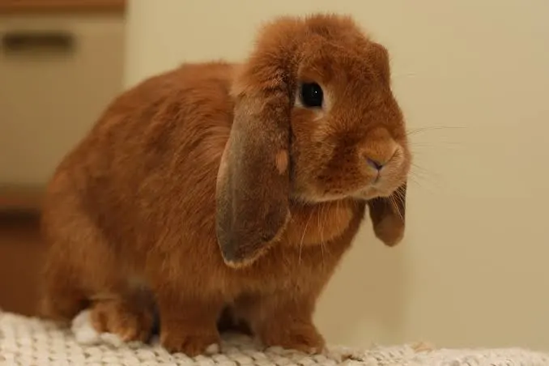

Adoptable Animals And Our Services
We run a comprehensive program dedicated to rescue, clinical sterilisation, and pairing prospective owners with matching pets. Discover our processes and find your next family companion below.enquiry page and let us know which animal you're interested in.
Animals Available for Adoption

Culture
Golden Retriever mix
Friendly, vet-checked, and ready to meet their new loving family. Reach out to schedule a meetup.

Whiskers
Domestic Shorthair cat
Friendly, vet-checked, and ready to meet their new loving family. Reach out to schedule a meetup.

Kora
German Shepherd puppy
Friendly, vet-checked, and ready to meet their new loving family. Reach out to schedule a meetup.
Our Services
Animal Rescue
Active response to stray, lost, or injured animal calls to safely secure and transport them to protective shelter housing.
Sterilisation operations
Essential health and population management procedures overseen by professional veterinary surgeons to keep animals safe.
Adoption Support
Coaching, home checks, and documentation support to make the transitional period smooth and reliable for your household.